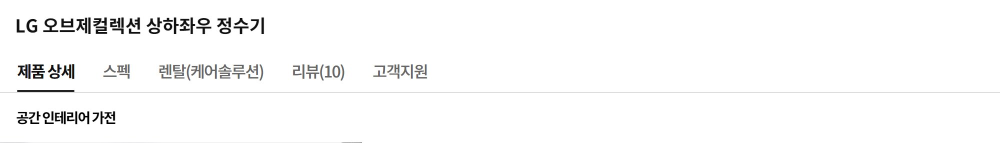

-


뉴트럴 디자인 : 감각적인 컬러, 자유로운 출수구 / 압도적인 청결 : 스테인리스 직수관, 전 구간 고온살균 / 검증된 필터 : 4단계 올 퓨리, 필터 시스템
뉴트럴 디자인
공간에 스며드는 컬러
어떤 취향, 어떤 인테리어에서든 소품처럼
녹아드는 뉴트럴 디자인은 우아한 컬러로
주방의 분위기를 감각적으로 변화시킵니다


국내 최초 상하좌우 무빙 출수탭
당신의 주방에서
아름답고 자유롭게
집마다 주방의 크기와 구조가 다르기에,
상하좌우 자유로운 무빙 출수탭으로
공간의 실용성과 활용성과 동시에 높였습니다
컵이나 냄비에 따라 높낮이도 자동 조절돼
뜨거운 물을 받을 때도 안전합니다


고온 살균 & 스테인리스 직수관
세균 걱정 남김없이
99.99% 강력 살균
위생에 특화된 스테인리스 직수관은 물론
필터와 직수관, 출수구까지 압도적 살균력이
검증된 고온수로
주기적인 살균이 진행되어
별다른 관리 없이도 청결을 항시 유지합니다


-

자동살균, 수동살균, 안심살균
99.99% UVnano 안심살균
한 시간에 한 번씩
한 시간에 한 번씩
매일매일
외부에 노출된 코크는 물이 직접 닿는 곳인
만큼 그 어느 곳보다 세심한 관리가 필수죠
상하좌우 정수기는 UV-LED로 24시간 청결을
유지해 언제든 마음 놓고 마실 수 있어요
만큼 그 어느 곳보다 세심한 관리가 필수죠
상하좌우 정수기는 UV-LED로 24시간 청결을
유지해 언제든 마음 놓고 마실 수 있어요
4단계 올 퓨리 필터 시스템
엄격하게 정수된
엄격하게 정수된
급이 다른 수질
새롭게 업그레이드된 4단계 필터 시스템은
물속 건강한 미네랄은 그대로 유지하면서
차원이 다른 정수 능력을 발휘합니다
덕분에 이유식, 분유에도 안심하고 쓸 수 있죠
물속 건강한 미네랄은 그대로 유지하면서
차원이 다른 정수 능력을 발휘합니다
덕분에 이유식, 분유에도 안심하고 쓸 수 있죠
-


자동살균, 수동살균, 안심살균
-


필터 세척을 완료했습니다. / 냉수 버튼을 3초간 누루면 필터 사용량을 초기화 합니다.
음성 안내
알아서 척척 알려주는
알아서 척척 알려주는
똑똑한 목소리
필터 수명은 얼마나 남았는지 살균은
며칠 주기로 해야 하는지 똑똑한 음성
안내가 때에 맞춰 다정하게 알려드려요
며칠 주기로 해야 하는지 똑똑한 음성
안내가 때에 맞춰 다정하게 알려드려요
초간편 터치 디스플레이
셀프 케어도 물 조절도
셀프 케어도 물 조절도
버튼 하나로 끝
누구나 스스로 쉽게 관리할 수 있도록
필요한 기능을 보기 쉽게 담았습니다
출수구, 직수관 살균은 버튼 하나로 바로,
출수 용량도 디테일하게 조절할 수 있죠
필요한 기능을 보기 쉽게 담았습니다
출수구, 직수관 살균은 버튼 하나로 바로,
출수 용량도 디테일하게 조절할 수 있죠
-


셀프 케어 : 출수구살균, 직수관살균 / 출수량 맞춤 시슻템 : 120, 250, 500, 100ml 선택


LG ThinQ
한눈에 보고 관리하는
한눈에 보고 관리하는
스마트한 정수기 생활
평소 물 사용 습관은 물론 자동 살균 설정,
살균 이력 관리까지 LG ThinQ 앱 하나로
한눈에 체크하고 편하게 관리하세요
살균 이력 관리까지 LG ThinQ 앱 하나로
한눈에 체크하고 편하게 관리하세요
자가관리/방문관리
생활맞춤 케어 서비스
평소 라이프 스타일에 맞춰 원하는 케어 서비스를
선택해 보세요
전문가가 시기별로 척척 챙겨주는
방문관리는 물론 혼자서도 손쉽게 관리할 수 있죠
선택해 보세요
전문가가 시기별로 척척 챙겨주는
방문관리는 물론 혼자서도 손쉽게 관리할 수 있죠
관리방법 관리항목 |
방문관리 | 자가관리 |
|---|---|---|
| 방문주기 | 3개월 | 무방문 |
| 살균키트 | 매니저 | X |
| 직수관 살균 | 고온살균 기능 | 고온살균 기능 |
| 출수구 살균 | 매니저 | 자가관리 |
하단 컨텐츠